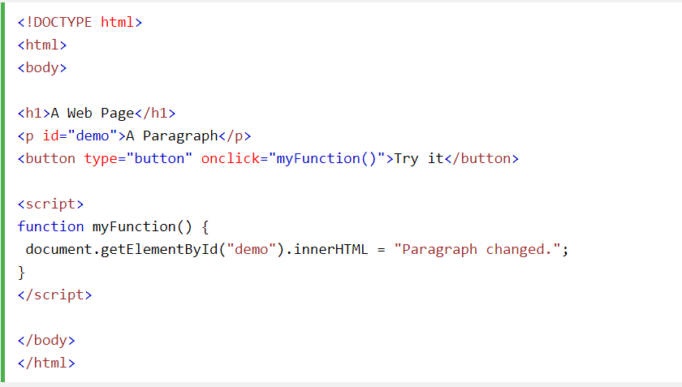

JavaScript Tanıtımı
JavaScript HTML İçeriğini Değiştirebilir
Birçok JavaScript HTML yönteminden biri getElementById().
Bu örnek, bir HTML öğesini (id = "demo" ile) "bulma" yöntemini kullanır
ve öğe içeriğini ( innerHTML) "Merhaba JavaScript" olarak değiştirir:
ÖRNEK: document.getElementById("demo").innerHTML = "Hello JavaScript";
!!!JavaScript hem çift hem de tek tırnakları kabul eder.ÖRNEK:document.getElementById('demo').innerHTML = 'Hello JavaScript';

<.script> Etiketi
HTML'de, JavaScript kodu etiketleri arasına eklenmelidir .
<.script>
document.getElementById("demo").innerHTML = "My First JavaScript";
<./script>JavaScript İşlevleri ve Etkinlikleri
JavaScript function, "çağrıldığında" çalıştırılabilen bir JavaScript kodu bloğudur.
Örneğin, bir olay meydana geldiğinde, örneğin kullanıcı bir düğmeyi tıklattığında olduğu gibi bir işlev çağrılabilir .
Daha sonraki bölümlerde fonksiyonlar ve olaylar hakkında daha fazla bilgi edineceksiniz.
<.head> veya <.body> içindeki JavaScript
Bir HTML belgesine istediğiniz sayıda komut dosyası yerleştirebilirsiniz.
Komut dosyaları bir HTML sayfasının içine
veya bölümüne veya her ikisine birden yerleştirilebilir.<.head> dilinde JavaScript
Bu örnekte, bir HTML sayfasının bölümüne bir JavaScript functionyerleştirilmiştir <.head>
<.body> içindeki JavaScript
Bu örnekte, bir HTML sayfasının bölümüne bir JavaScript functionyerleştirilmiştir <.body>.
